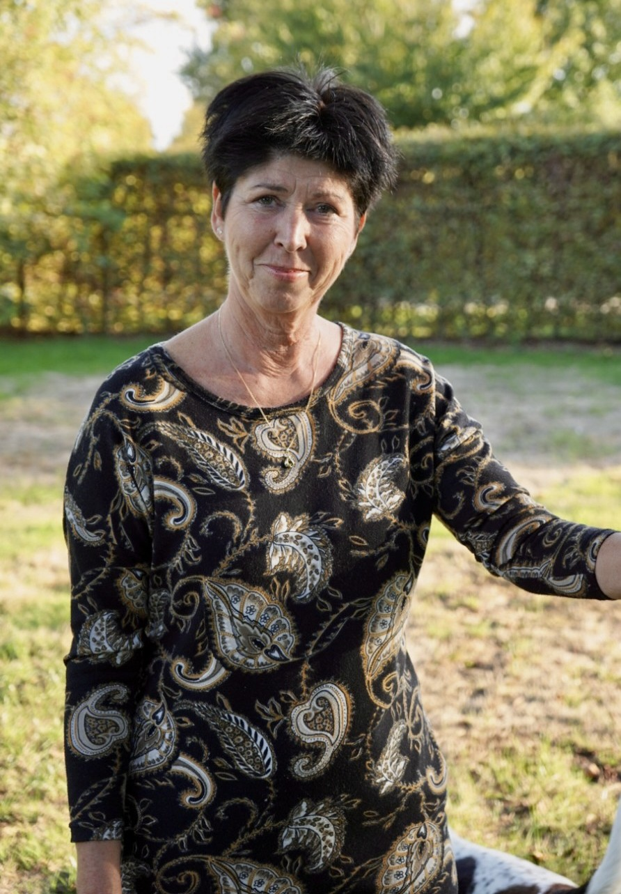

Cognitieve gedragstherapie
Ontdek hoe gedachten, gevoelens en gedrag samenhangen — en leer patronen om te buigen die je in de weg zitten.
Coachstudio · Neerharen — vlakbij Maastricht
Bij Studio Rise komen oosterse en westerse wijsheid samen. Een unieke combinatie van hoofd én hart, denken én voelen — zodat jij weer in beweging komt.
In mijn coachstudio maak ik gebruik van beide werelden. Deze gecombineerde oosterse en westerse kennis en wijsheid zorgen voor een unieke combinatie.
Net zoals je geest en lichaam een geheel vormen, zijn je denken en voelen onlosmakelijk met elkaar verbonden. Beide werken op elkaar in — en de een kun je via de andere bereiken. Dat is mijn manier van coachen.
Intuïtie, mindfulness en Reiki brengen rust en ruimte in je lichaam.
Cognitieve gedragstherapie geeft grip op je gedachten en gedrag.
Mijn manier van coachen bestaat uit een combinatie van verschillende benaderingen. Samen vormen ze een pad dat past bij jou.
Ontdek hoe gedachten, gevoelens en gedrag samenhangen — en leer patronen om te buigen die je in de weg zitten.
Luisteren naar wat er ónder de woorden leeft. Je innerlijke wijsheid wijst vaak de weg die je verstand nog niet ziet.
Terug naar het hier en nu. Met aandacht ademen, waarnemen en aanwezig zijn — zonder oordeel, met mildheid.
Zachte energiebehandeling die lichaam en geest tot rust brengt en je natuurlijke veerkracht ondersteunt.
Ik kan je ondersteunen bij diverse hulpvragen en problemen die zich voordoen in je dagelijks leven. Een paar voorbeelden:
Herken je jezelf hierin, of speelt er iets anders? Neem gerust contact op — dan kijken we samen.

Ik heb ruime ervaring in het coachen van verschillende doelgroepen. Ik ben werkzaam geweest in het (speciaal) onderwijs, de kinderopvang en het sociaal welzijn.
Vanuit die achtergrond breng ik geduld, een luisterend oor en een brede blik mee. Mijn opleidingen combineren westerse psychologie met oosterse, intuïtieve wijsheid.
Jongeren, jongvolwassenen en volwassenen — iedereen die weer in beweging wil komen.
In mijn praktijk aan het Beverpad 4, Lanaken (Neerharen) — direct naast Maastricht.
We starten met een vrijblijvende kennismaking, zodat je rustig kunt voelen of het klikt.
Studio Rise ligt in een rustige, groene omgeving in Neerharen (Lanaken), op een steenworp afstand van Maastricht. Een fijne plek om even helemaal tot jezelf te komen.